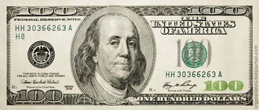

×

East Timor
____
Валюта
Валюта в Восточном Тиморе - Доллар США.
Курс: 1 Доллар США - 74,67 рублей (7 февраля 2021).
Появился Доллар США в 1792 году. Находятся банкноты номиналом 1, 2, 5, 10, 20, 50 и 100 долларов, а также монеты — 1 и 5 центов, 1 дайм, 1⁄4, 1⁄2 и 1 доллар.

История
Голландцы и некоторые другие поселенцы в Северной Америке использовали в качестве валюты талеры. После провозглашения независимости США доллары были выбраны в качестве национальной денежной единицы. Однако слово «доллар» не имеет прямого отношения к талеру конца XVIII века. В Англии (где произношение названия валюты изменилось на «доллар») «долларами» называли любые серебряные монеты, похожие на талер, а в американских колониях таким образом наименовали испанские серебряные песо (т. н. Spanish Dollars), которые получили хождение во время войны за независимость США. Первые доллары, как и талеры, были серебряными монетами. Позже появились бумажные ассигнации (банкноты). Они изначально были сделаны зеленоватого (хотя больше серого) цвета. До 1861 года США фактически не имели единой банкнотной системы. Большинство денежных операций осуществлялось через частные банки или через «звонкую монету» (в этом случае под этот термин попадают также золотые и серебряные слитки). Временные быстровыкупаемые облигации «Treasury Notes», выпускаемые Казначейством США в 1793—1861 гг., полноценными банкнотами считать нельзя. После начала Гражданской войны обеим враждующим сторонам потребовались гигантские суммы денег. 17 июля 1861 года Конгресс США принял акт, обязывающий казначейство выпустить новые денежные знаки на астрономическую по тем временам сумму — 60 миллионов долларов. Заказ был направлен в нью-йоркскую печатную компанию «American Bank Note Co.» Учитывая, что акт 17 июля санкционировал выпуск только номиналов 5, 10 и 20 долларов, можно представить, какое огромное количество банкнот пришлось изготовить. Печатники подошли к делу с чисто практической стороны: они проверили, прежде всего, запасы краски на складах и выяснили, что больше всего зелёной. Таким образом, и были выпущены миллионы банкнот с зелёной оборотной стороной. В народе они тут же получили прозвище «гринбаки» (англ. greenbacks — «зелёные спинки»), которое закрепилось за всеми видами американской валюты, независимо от её расцветки. В XIX веке в США существовала политическая партия гринбекеров. Позднее и само казначейство приняло эту традицию, долгое время выпуская банкноты только с зелёным оборотом. Лишь в 2004 году стали выпускаться банкноты других цветов. Изменения коснулись банкнот достоинством 10, 20 и 50 долларов США. Периодически вносятся предложения о выводе из обращения банкноты достоинством 1 доллар и замене её монетами соответствующего номинала. Однако решение об изъятии этой банкноты Конгрессом США не было принято.
____